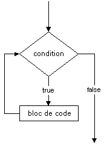
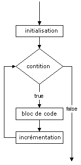

while (condition) {
instruction;
...
} |
 |
while exécute la commande ou le bloc de commandes tant que la condition est évalue comme true.
L'instruction break permet de forcer la
sortie de la boucle.
Dans le cas de boucles imbriquées, break peut être suivi d'un nombre indiquant
le nombre d'imbriquations à arrêter.
L'instruction continue permet de sauter
à la prochaine itération dans la boucle.
Dans le cas de
boucles imbriquées, continue peut être
suivi d'un nombre indiquant le nombre d'imbriquations à sauter.
PHP supporte aussi les boucles do ... while avec la syntaxe :
do {
instruction;
...
} while (condition);
for (expression_1; expression_2; expression_3) {
instruction;
...
}
for est une instruction de boucle, qui répéte le bloc d'instruction tant que la condition contenue dans expression_2 est évaluée comme true.
Le contenu de expression_1 est
d'abord exécuté (une seule fois), puis expression_2
est évaluée. |
 |
L'instruction break permet de forcer la
sortie de la boucle.
Dans le cas de boucles imbriquées, break peut être suivi d'un nombre indiquant
le nombre d'imbriquations à arrêter.
L'instruction continue permet de sauter
à la prochaine itération dans la boucle.
Dans le cas de
boucles imbriquées, continue peut être
suivi d'un nombre indiquant le nombre d'imbriquations à sauter.
Généralement :
Plusieurs expressions peuvent être définies dans expression_1, expression_2 et expression_3. Il suffit de les séparer par des virgules :
for ($i = 0, $j = 10; $i > 10, $j > 50; $i++, $j *= 2) {
...
}
En utilisant l'instruction for, écrivez la page permettant de générer le résultat ci-dessous.
L'instruction foreach permet de faire des itérations sur un tableau. Cette instruction est particulièrement utile dans PHP où les tableaux peuvent avoir des clés alphanumériques (table de hachage ou dictionnaire) ou bien des indices numériques non consécutifs.
Un chapitre entier est consacré à l'utilisation des tableaux dans PHP et vous y trouverez toutes les informations détaillées sur la façon de réaliser des itérations.
L'instruction foreach définit une boucle exécutée automatiquement du premier au dernier élément d'un tableau. On ne peut donc pas choisir ni le premier élément "parcouru", ni l'élément de fin (à moins de sortir de la boucle avec une instruction break).
On présente ici les 2 syntaxes permettant d'accéder en consultation aux éléments d'un tableau.
foreach ($tableau as $valeur) {
instruction
...
}
Avec cette syntaxe, à chaque itération la valeur de l'élément courant du tableau $tableau est assignée à la variable $valeur. Le pointeur interne du tableau est avancé automatiquement d'un élément jusqu'à ce qu'il n'y ait plus d'élément dans le tableau.
foreach ($tableau as $cle => $valeur) {
instruction
...
}
Avec cette syntaxe, en plus de la valeur de l'élément courant assignée à la variable $valeur, la valeur de la clé de l'élément est assignée à la variable $cle.